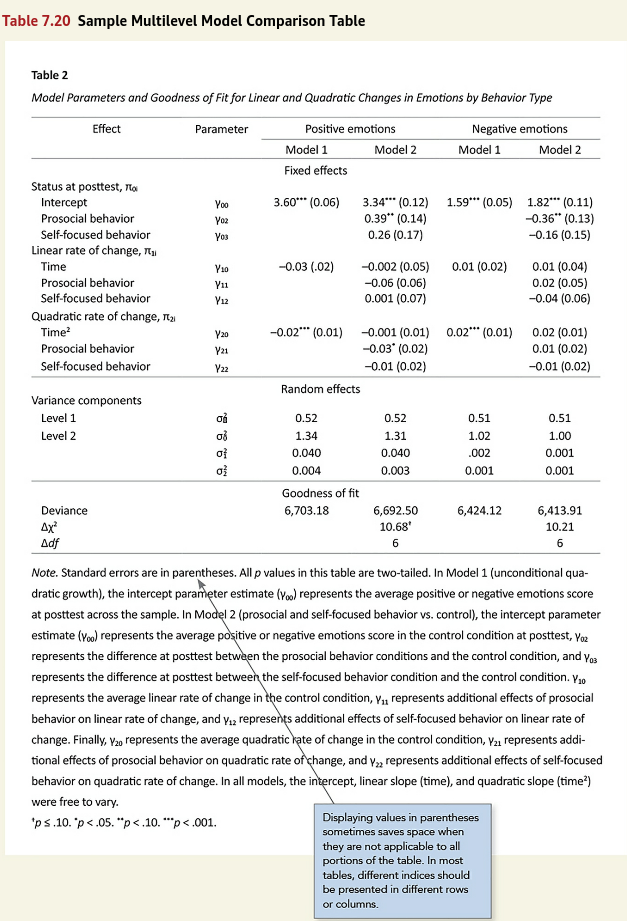

![]()
library(apa7)
library(flextable)
library(ftExtra)
library(tidyverse)
library(easystats)
library(lme4)
set_flextable_defaults(theme_fun = theme_apa,
font.family = "Times New Roman")Making tables in APA style (Part 20 of 24)
In this 24-part series, each of the tables in Chapter 7 of the Publication Manual of the American Psychological Association (7th Edition) is recreated with apa7, flextable, easystats, and tidyverse functions.
NoteHighlights
- Display of multilevel models
Figure 1
Screenshot of the APA Manual’s Table 7.20

I wanted the experience of making the table close to what would happen in a real analysis. Instead of copying table’s text exactly, I simulated multilevel data based on the results in Figure 1. Although there are functions that can simulate multilevel data, In my experience, I can more easily get exactly what I want if I write out the equations and them simulate the data myself. The only information I lacked were the sample sizes at levels 1 and 2 and the number of times these behaviors were measured in the observational study. I supplied some numbers that made the models run without error.
Level 1
\begin{aligned} Y_{ij} &= b_{0j} + b_{1j}Time_{ij} + b_{2j}Time_{ij}^2 + e_{ij}\\ e_{ij}&\sim\mathcal{N}\left(0,\tau_1\right) \end{aligned}
Level 2
\begin{aligned} b_{0j} &= b_{00}+b_{01}PBS_j+b_{02}SFB_j+e_{0j}\\ b_{1j} &= b_{10}+b_{11}PBS_j+b_{12}SFB_j+e_{1j}\\ b_{2j} &= b_{20}+b_{21}PBS_j+b_{22}SFB_j+e_{2j}\\ e_2&=\begin{bmatrix} e_{0j}\\ e_{1j}\\ e_{2j} \end{bmatrix}\\ \tau_2&=\begin{bmatrix} \tau_{00}&0&0\\ 0&\tau_{11}&0\\ 0&0&\tau_{22}\\ \end{bmatrix}\\ e_2&\sim\mathcal{N}\left(0,\tau_2\right) \end{aligned}
Because of the stars after the coefficients, I was not able to find a good option for aligning both the coefficients and standard errors in the “Model” columns, so I aligned the coefficients only.
Getting coefficients, variance components, and fit statistics in the same table required a lot of custom formatting. Automating some of this would be a good idea.
set.seed(123)
# Number of people
n_2 <- 400
# Number of time points
n_1 <- 15
d_parameter <- tibble::tibble(
symbol = c(
"b_00", "b_01", "b_02",
"b_10", "b_11", "b_12",
"b_20", "b_21", "b_22",
"s_e", "s_0", "s_1", "s_2"),
Positive = c(
3.34, 0.39, 0.26, -0.002, -0.06, 0.001,
-0.001, -0.03, -0.01, 0.52, 1.31, 0.04, 0.03),
Negative = c(
1.82, -0.36, -0.16, 0.01, 0.02, -0.04, 0.02,
0.01, -0.01, 0.51, 1, 0.02, 0.02),
Parameter = c(
"(Intercept)",
"PBS",
"SFB",
"Time",
"PBS:Time",
"Time:SFB",
"I(Time^2)",
"PBS:I(Time^2)",
"I(Time^2):SFB",
"SD (Observations)",
"SD (Intercept)",
"SD (Time)",
"SD (I(Time^2))"),
pname = c(
"Intercept",
"Prosocial behavior",
"Self-focused behavior",
"Time",
"Prosocial behavior",
"Self-focused behavior",
"Time^2",
"Prosocial behavior",
"Self-focused behavior",
"Level 1",
"Level 2",
"Level 2",
"Level 2"),
l2 = c(
rep("Status at postest, π~0j~", 3),
rep("Linear rate of change, π~1j~", 3),
rep("Quadratic rate of change, π~2j~", 3),
rep("Variance components", 4)),
effect_type = c(
rep("Fixed", 9),
rep("Random", 4))
) |>
mutate(symbol = fct_inorder(symbol),
pname = fct_inorder(pname))
# Level 1 variances
tau_1 <- d_parameter |>
filter(symbol == "s_e") |>
select(symbol, Positive, Negative) |>
pivot_longer(-symbol) |>
select(name, value) |>
deframe()
# Level 2 variances
tau_2 <- d_parameter |>
filter(str_starts(symbol, "s_")) |>
filter(symbol != "s_e") |>
select(symbol, Positive, Negative) |>
pivot_longer(-symbol) |>
select(-symbol) |>
nest(value = -name) |>
mutate(value = map(
value,
\(x) diag(unlist(x)))) |>
deframe()
# Fixed effects
d_parameter_fixed <- d_parameter |>
filter(effect_type == "Fixed") |>
select(symbol, Positive, Negative) |>
pivot_longer(-symbol,
names_to = "dv",
values_to = "b") |>
pivot_wider(names_from = symbol,
values_from = b)
# Level 2 simulated data
d_2 <- tibble(
id = seq_len(n_2),
Intercept = 1,
PBS = rnorm(n_2),
SFB = rnorm(n_2)
) |>
crossing(
dv = fct_inorder(c("Positive",
"Negative"))) |>
nest(data = -dv) |>
mutate(
tau_2 = tau_2,
e_2 = map(
tau_2,
\(x) {
mvtnorm::rmvnorm(
n = n_2,
mean = c(
e_0j = 0,
e_1j = 0,
e_2j = 0),
sigma = x) |>
as_tibble()
})) |>
select(-tau_2) |>
unnest(c(data, e_2)) |>
left_join(d_parameter_fixed, by = join_by(dv)) |>
mutate(b_0j = b_00 + b_01 * PBS + b_02 * SFB + e_0j,
b_1j = b_10 + b_11 * PBS + b_12 * SFB + e_1j,
b_2j = b_20 + b_21 * PBS + b_22 * SFB + e_2j)
# Level 1 simulated data
d_1 <- d_2 |>
crossing(
Time = seq(0, n_1 - 1)
) |>
nest(data = -dv) |>
mutate(tau_1 = tau_1,
e_ij = map2(tau_1, data, \(tau, d) {
rnorm(nrow(d), sd = sqrt(tau))
})) |>
unnest(c(data, e_ij)) |>
mutate(
y = b_0j + b_1j * Time + b_2j * Time^2 + e_ij) |>
select(dv, id, PBS, SFB, Time, y)
# Analyze data
fit <- d_1 |>
nest(data = -dv) |>
mutate(
`Model 1` = map(
data,
\(d) {
lmer(y ~ 1 + Time + I(Time^2) +
(1 + Time + I(Time^2) || id),
data = d)
}),
`Model 2` = map(
data,
\(d) {
lmer(y ~ 1 + PBS * Time + PBS * I(Time^2) +
SFB * Time + SFB * I(Time^2) +
(1 + Time + I(Time^2) || id),
data = d)
})
) |>
select(-data) |>
pivot_longer(-c(dv),
names_to = "Model",
values_to = "fit") |>
mutate(
parameters = map(
fit, parameters::parameters,
include_sigma = TRUE))
# Peformance statistics
d_performance <- fit |>
select(dv, fit) |>
summarise(fit = list(fit), .by = dv) |>
mutate(p = map(fit, \(f1) {
anova(f1[[1]], f1[[2]]) |>
as_tibble() |>
rename(Deviance = `-2*log(L)`,
deltachi2 = Chisq,
df_diff = Df,
p = `Pr(>Chisq)`) |>
mutate(Model = paste0("Model ", 1:2),
chistar = p2stars(p),
Deviance = align_chr(Deviance)) |>
select(
Model,
Deviance,
deltachi2,
df_diff,
chistar) |>
apa_format_columns() |>
unite(`Δχ^2^`,
`Δχ^2^`,
chistar,
sep = "")
})) |>
select(-fit) |>
arrange(desc(dv)) |>
unnest(p) |>
mutate(dv = paste0(dv, " emotions")) |>
unite(dv, c(dv, Model)) |>
mutate(dv = fct_inorder(dv)) |>
pivot_longer(-dv, names_to = "Effect") |>
pivot_wider(names_from = dv) |>
mutate(effect_type = "Goodness of fit") |>
suppressMessages()
# Format data
d <- fit |>
unnest(parameters) |>
select(dv, Model, Parameter, Coefficient, SE, p) |>
mutate(Coefficient = align_chr(Coefficient)) |>
add_star_column(Coefficient, merge = TRUE) |>
mutate(SE = align_chr(SE,
accuracy = .01) |>
tagger(" (", ")"),
b = paste0(Coefficient, SE),
dv = fct_inorder(paste(dv, "emotions"))) |>
select(dv, Model, Parameter, b) |>
unite(dv, c(dv, Model)) |>
pivot_wider(names_from = dv, values_from = b) |>
left_join(
d_parameter |>
select(Parameter,
symbol,
pname,
l2,
effect_type),
by = join_by(Parameter)) |>
arrange(symbol) |>
rename(Effect = pname) |>
select(-Parameter) |>
relocate(Effect, symbol, .before = 0) |>
mutate(symbol = as.character(symbol) |>
str_replace_all(
c(`s_` = "σ~",
`b_` = "γ~")) |>
paste0("~", ifelse(
str_detect(symbol, "^s"),
"^2^",
""))) |>
mutate(Effect = as.character(Effect) |> str_replace("\\^2", "^2^")) |>
as_grouped_data(c("effect_type", "l2")) |>
mutate(Effect = ifelse(is.na(l2), Effect, l2)) |>
select(-l2) |>
tidyr::fill(effect_type) |>
filter(!is.na(Effect)) |>
bind_rows(d_performance) |>
mutate(across(
everything(),
\(x) replace_na(x, replace = ""))) |>
rename(`Parameter ` = symbol)
# Make table
d |>
apa_flextable(
row_title_column = effect_type,
row_title_align = "center",
font_size = 10,
line_spacing = 1.5) |>
align(j = 1, i = ~is.na(row_title)) |>
padding(
j = 1,
i = ~(is.na(row_title) &
`Parameter ` != ""),
padding.left = 15) |>
merge_v(j = "Effect") |>
width(width = c(1.70, .55,
1.05, 1.05, .05,
1.05, 1.05))Table 1
Model Parameters and Goodness of Fit for Linear and Quadratic Changes in Emotions by Behavior Type
Effect | Parameter | Negative emotions | Positive emotions | |||
|---|---|---|---|---|---|---|
Model 1 | Model 2 | Model 1 | Model 2 | |||
Fixed | ||||||
Status at postest, π0j | ||||||
Intercept | γ00 | 1.79*** (0.06) | 1.80*** (0.06) | 3.40*** (0.06) | 3.39*** (0.06) | |
Prosocial behavior | γ01 | −0.34*** (0.06) | 0.25*** (0.06) | |||
Self-focused behavior | γ02 | −0.17** (0.06) | 0.22*** (0.06) | |||
Linear rate of change, π1j | ||||||
Time | γ10 | 0.00 (0.01) | 0.00 (0.01) | 0.00 (0.01) | 0.00 (0.01) | |
Prosocial behavior | γ11 | 0.02 (0.01) | −0.08*** (0.01) | |||
Self-focused behavior | γ12 | −0.04*** (0.01) | 0.02 (0.01) | |||
Quadratic rate of change, π2j | ||||||
Time2 | γ20 | 0.02** (0.01) | 0.02** (0.01) | 0.02 (0.01) | 0.02 (0.01) | |
Prosocial behavior | γ21 | 0.00 (0.01) | −0.03*** (0.01) | |||
Self-focused behavior | γ22 | 0.00 (0.01) | −0.02* (0.01) | |||
Random | ||||||
Variance components | ||||||
Level 1 | σe2 | 0.73 | 0.73 | 0.71 | 0.71 | |
Level 2 | σ02 | 1.08 | 1.01 | 1.15 | 1.11 | |
σ12 | 0.13 | 0.13 | 0.22 | 0.20 | ||
σ22 | 0.13 | 0.13 | 0.18 | 0.18 | ||
Goodness of fit | ||||||
Deviance | 17,862.07 | 17,800.95 | 18,214.81 | 18,133.36 | ||
Δχ2 | 61.12*** | 81.45*** | ||||
Δdf | 6 | 6 | ||||
Note. Standard errors are in parentheses. All p values in this table are two tailed. In Model 1 (unconditional quadratic growth), the intercept parameter estimate (γ00) represents the average positive or negative emotions score at posttest across the sample. In Model 2 (prosocial and self-focused behavior vs. control), the intercept parameter estimate (γ00) represents the average positive or negative emotions score in the control condition at posttest, γ02 represents the difference at posttest between the prosocial behavior conditions and the control condition, and γ03 represents the difference at posttest between the self-focused behavior condition and the control condition. γ10 represents the average linear rate of change in the control condition, γ11 represents additional effects of prosocial behavior on linear rate of change, and γ12 represents additional effects of self-focused behavior on linear rate of change. Finally, γ20 represents the average quadratic rate of change in the control condition, γ21 represents additional effects of prosocial behavior on quadratic rate of change, and γ22 represents additional effects of self-focused behavior on quadratic rate of change. In all models, the intercept, linear slope (time), and quadratic slope (time2) were free to vary.
* p < .05. ** p < .01. *** p < .001.
Citation
BibTeX citation:
@misc{schneider2025,
author = {Schneider, W. Joel},
title = {Recreating {APA} {Manual} {Table} 7.20 in {R} with Apa7},
date = {2025-09-30},
url = {https://wjschne.github.io/posts/apatables/apa720.html},
langid = {en}
}
For attribution, please cite this work as:
Schneider, W. J. (2025, September 30). Recreating APA Manual Table 7.20
in R with apa7. Schneirographs. https://wjschne.github.io/posts/apatables/apa720.html